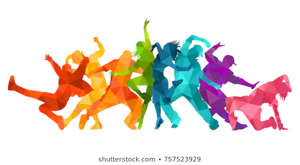

Events
Music
Music is an art form and cultural activity whose medium is sound organized in time. General definitions of music include common elements such as pitch (which governs melody and harmony), rhythm (and its associated concepts tempo, meter, and articulation), dynamics (loudness and softness), and the sonic qualities of timbre and texture (which are sometimes termed the "color" of a musical sound). Different styles or types of music may emphasize, de-emphasize or omit some of these elements. Music is performed with a vast range of instruments and vocal techniques ranging from singing to rapping; there are solely instrumental pieces, solely vocal pieces (such as songs without instrumental accompaniment) and pieces that combine singing and instruments. The word derives from Greek μουσική (mousike; "art of the Muses").[1] See glossary of musical terminology.
Dance
Dance is a performing art form consisting of purposefully selected sequences of human movement. This movement has aesthetic and symbolic value, and is acknowledged as dance by performers and observers within a particular culture.[nb 1] Dance can be categorized and described by its choreography, by its repertoire of movements, or by its historical period or place of origin.
An important distinction is to be drawn between the contexts of theatrical and participatory dance,[4] although these two categories are not always completely separate; both may have special functions, whether social, ceremonial, competitive, erotic, martial, or sacred/liturgical. Other forms of human movement are sometimes said to have a dance-like quality, including martial arts, gymnastics, cheerleading, figure skating, synchronised swimming, marching bands, and many other forms of athletics.
